Characters
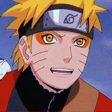
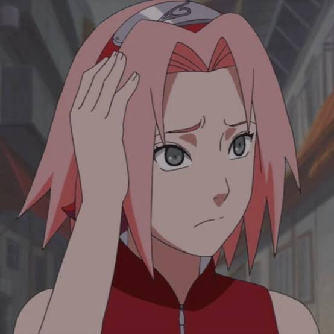
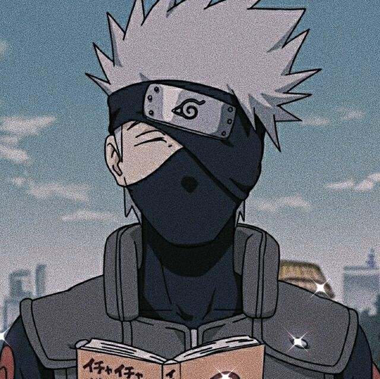
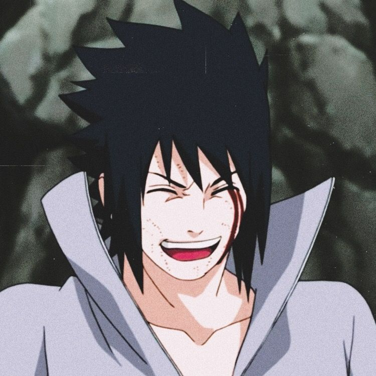
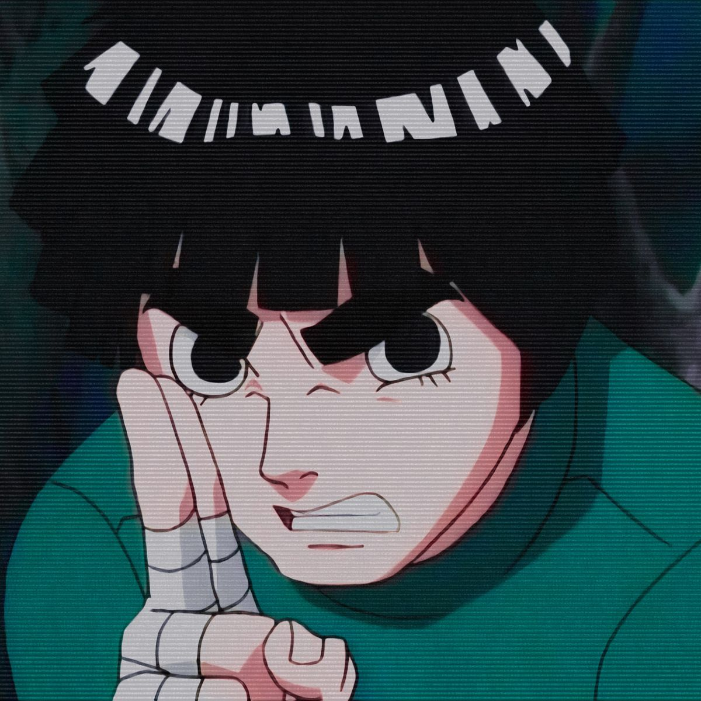
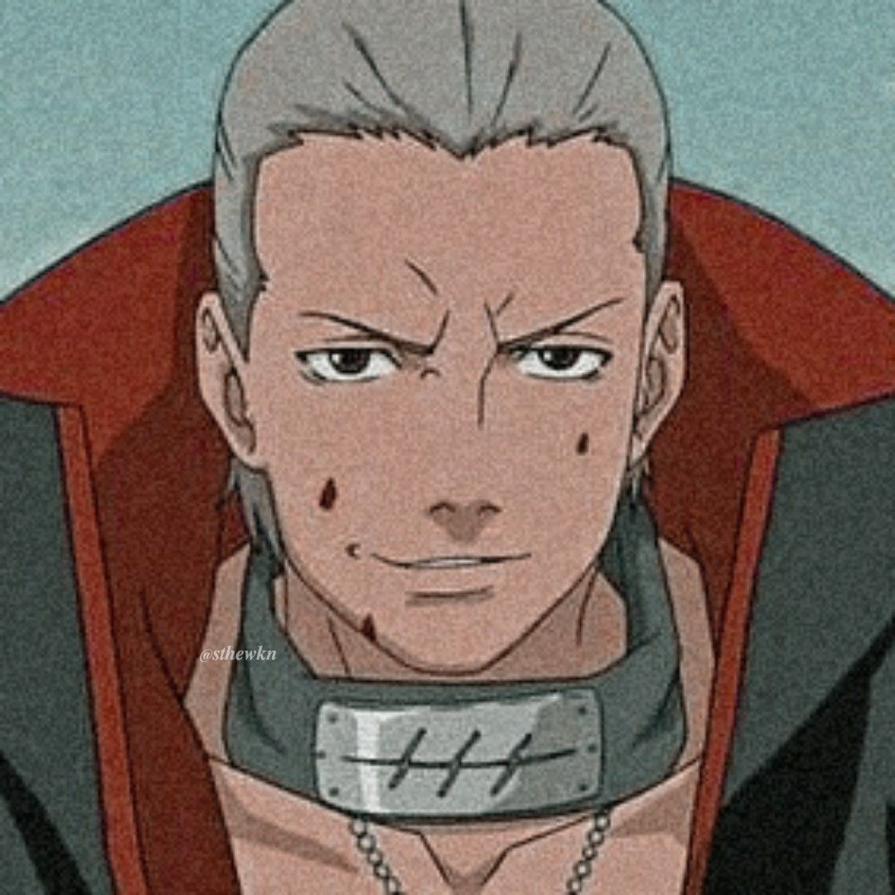
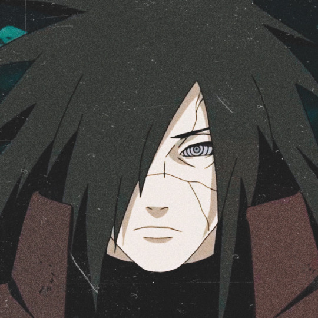
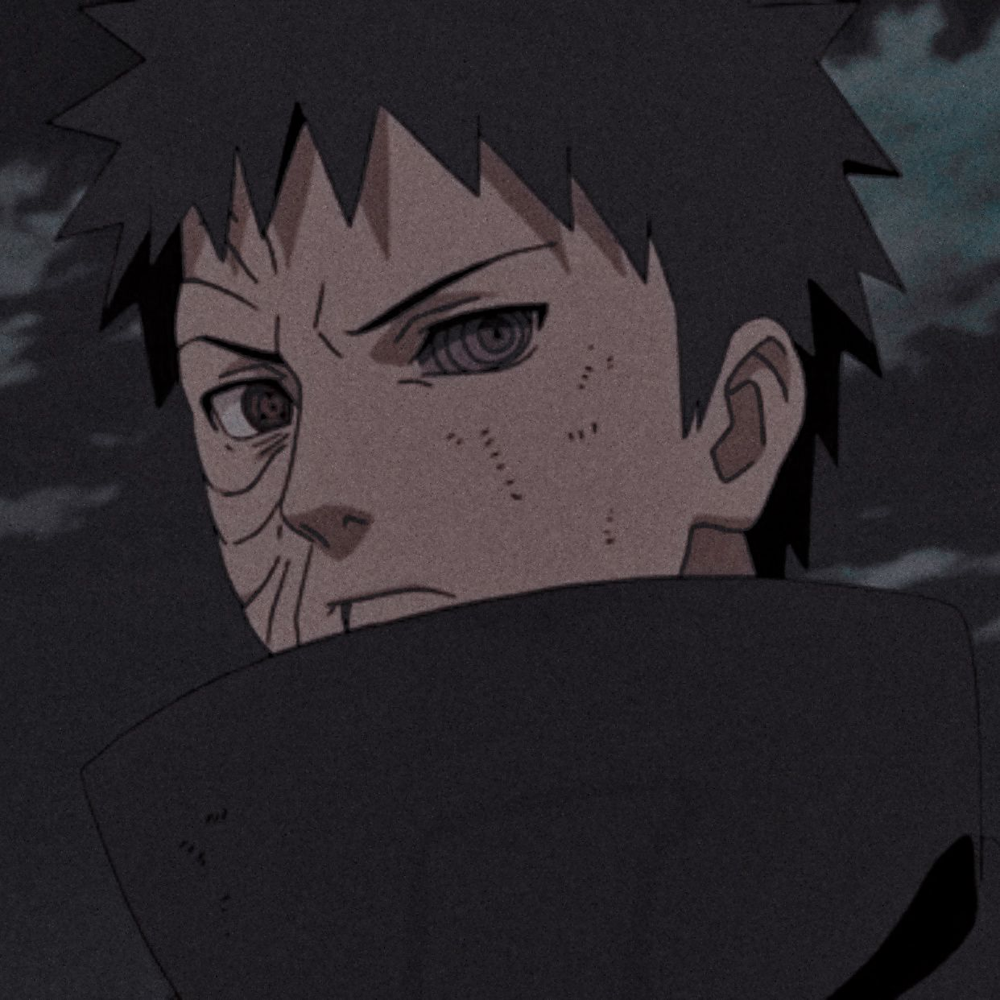
 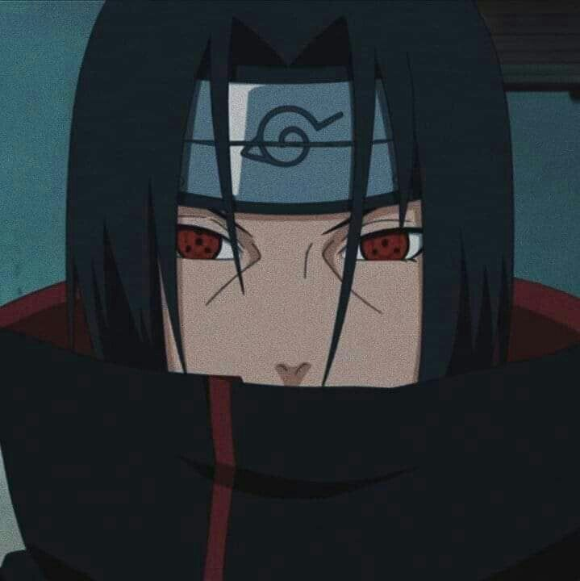
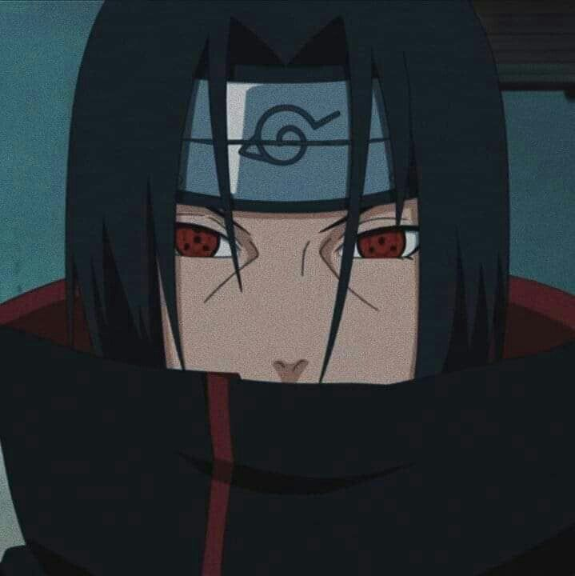
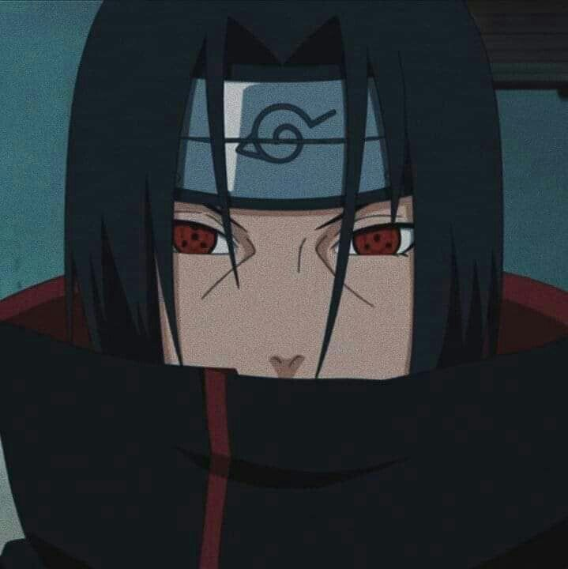
what is naruto?
The work tells the story of a teenage orphan ninja named Naruto Uzumaki, whose parents died in the attack of the Nine-Tailed Demon Fox, and who aspires to become Hokage (leader of his village) in order to be recognized as someone important within. of the village and among their peers.
Featured article
Obito Uchiha (うちはオビト Uchiha Obito), also known by his alias Tobi (トビ), is one of the main antagonists of the Naruto anime and manga series. He is first introduced in the "Kakashi Gaiden" arc, as a ninja who sacrifices himself to save his friends from rival ninjas.